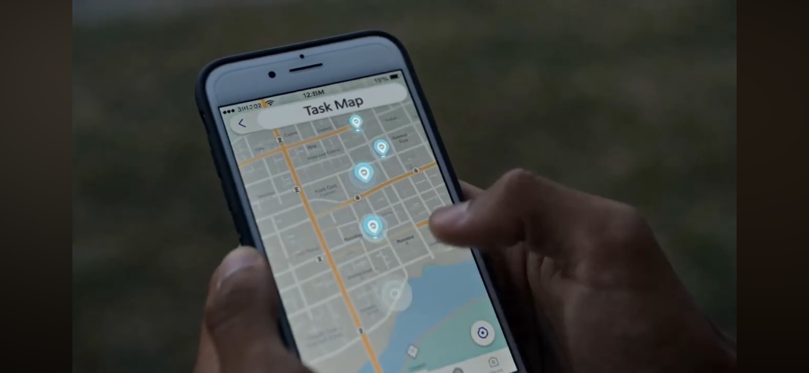

PurposeTask brings them together — connecting motivated workers, nonprofits, and mission-driven donors to verified community outcomes.

Marcus has capacity the community needs, but no clear way to connect it to work that's waiting. PurposeTask matches him to skills-based tasks, gets him paid the same day, and makes his contribution verifiable — so his work counts for something beyond the paycheck.
Skills-matched · Same-day pay · Community impactShe runs a nonprofit that defines real community needs every day. PurposeTask gives her a way to scope that work clearly, match it to the right people, and verify completion — so funders can see exactly what their dollars did.
Scoped tasks · Verified outcomes · Donor-readyHe's mission-driven and tired of writing checks into a void. PurposeTask routes his giving to specific, verified tasks — and brings him back a receipt that shows exactly who did what, and what it cost. Full visibility into every dollar.
Verified outcomes · Full fund visibility · Mission-alignedPurposeTask is a North Carolina nonprofit (501(c)(3) pending). We're not accepting donations yet — but we'd love to hear from you.